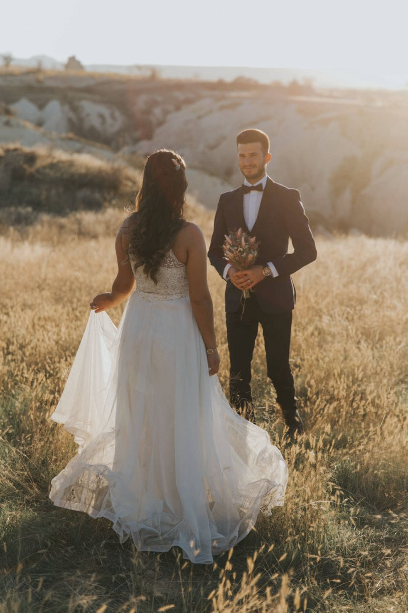

Düğün dış çekimleri için veya nişan, organizasyon çekimleri için kesinlikle ilk adım tarzınızı belirlemek olmalı.
Tarzınız, sizin hayal ettiklariniz ile gerçekte yaptığınız hazırlığınızın birleşiminden meydana gelir :) evet biraz matematik, fizik formülü gibi oldu fakat siz bir kır düğünü hayal edersiniz ama gerçekte bir salon düğünü yapıyorsunuzdur. işte yapacağınız fotoğrafçı seçimi de sizin sadece hayallerinize değil gerçekte yaptığınız hazırlığa göre de olmalı. Mesela klasik bir gelinlik damatlık seçimi yapıp, bohem tarzında düğün dış çekimi isteyemezsiniz veya istenesenizde maalesef bu gerçekleşemez.
Düğün hazırlığı veya nişan organizasyonu içinde yapılan harcamalardan sizin ömrünüz boyunca ve hatta torunlarınıza kadar aktarabileceğiniz hatıraları unutulmaz kılan düğün dış çekimi veya nişan dış çekimi için evet bir bütçe belirlemelisiniz. fakat bütçe asla ve asla tercihlerinizde birinci sebep olamamalı. Eğer düğün fotoğrafçısınızı seçerken kendinizi fiyat tekliflerinin arasında cebelleşirken bulduysanız ve bütçe sizin için birinci değişmezse, düğün dış çekimi yaptırmak isteyip istemediğinizi bir daha değerlendirin.

Evet tarzınızı ve bütçenizi belirlediniz. Artık araştırma yapmalısınız. Bu araştırma için sadece web veya sosyal ağlar değil ailenizden ve yakınlarınızdan da yapılan düğün çekimleri, albümler, gibi tecrübeleri de sorabilirsiniz.
Web sayfaları, sosyal ağlar, organizasyon platformları da düğün dış çekimi için veya düğün fotoğrafçınız için araştırma yapabileceğiniz yerler.
Birilerinin (düğün salonları, organizasyon firmaları vb.) verdiği kampanyalı çekimlerin cazibesi mi? yoksa sizin gönlünüzce yaptırmak istediğiniz bir çekim mi? buna karar vermek durumunda da kalabilirsiniz. pek tabi bu ikisini aynı seçenekte birleştirebildiğinizi değerlendiriyorsanız sizin için daha kolay bir seçim olacaktır.
Düğün fotoğrafçısı, düğün dış çekiminde sizin gelinliğinizin, damatlığınızın, tüm hazırlıklarınız ve detayların yanısıra sizin duygularınızı fotoğraflayacak kişi olması gerekir. Eğer düğün fotoğraflarımda duygularım, gülüşlerim, hüznüm, sevincimde olmalı diyorsanız, fotoğrafçınız olmasını istediğiniz kişiler ile kesinlikle detaylıca görüşün. Eğer sergilediği işleri ile çektiği fotoğraflar ile sizi etkileyen bir fotoğrafçısı ise çekiminizde istediğiniz detaylar hakkında onunla görüşün ve kararınızı verin.
Not: fotoğrafçınızın samimiyeti, sizin çekim anında duygularınızı dışa vurumunuzu kolaylaştıracağını unutmayınız. Kendinizi en rahat hissedeceğiniz fotoğrafçı ile çalışmanız sizin için eşsiz karelerin ilk adımı olacaktır :)
Herşeyin gönlünüzce olması dileğiyle :))
BİZİ TAKİP EDİN! :)